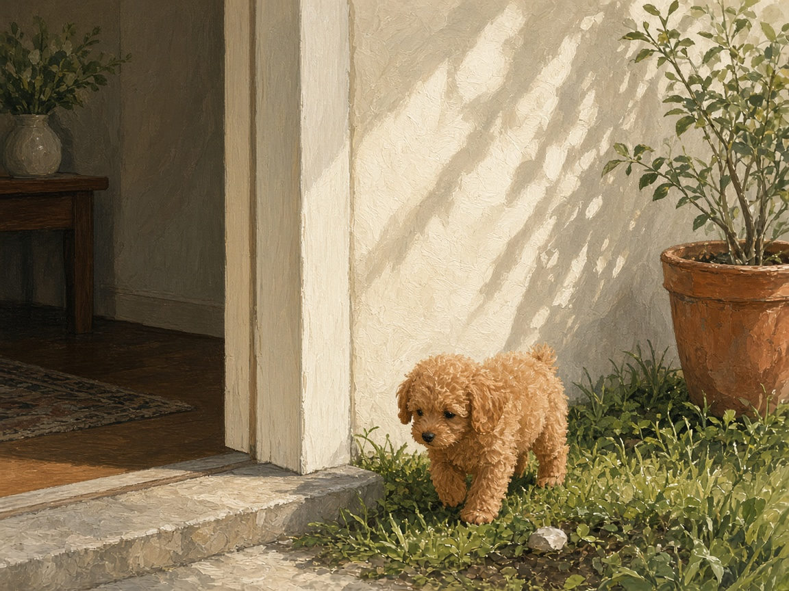
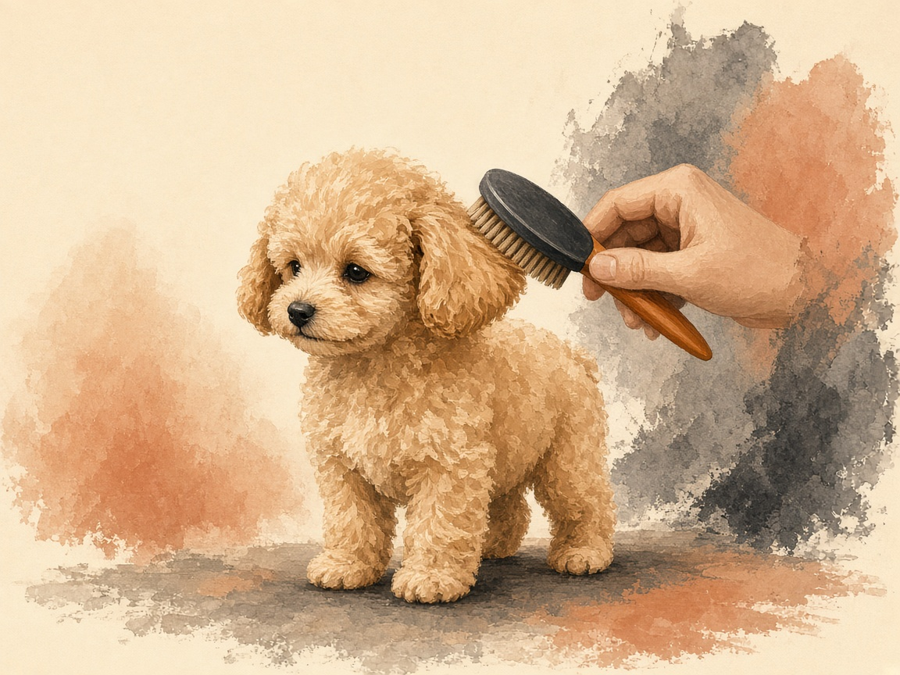
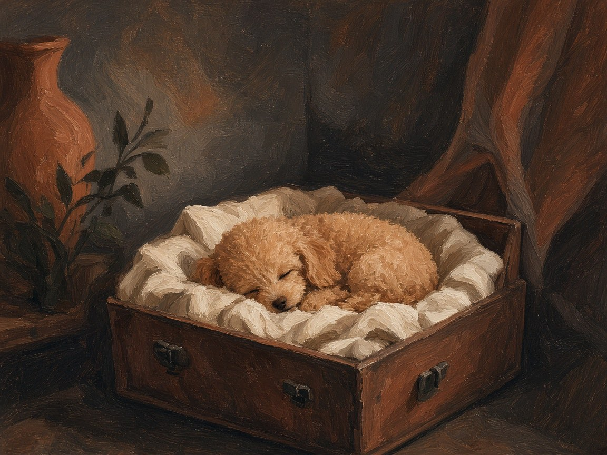

Home - The first 30 days
The long version
The first 30 days with your toy poodle
Safety, routine, house training, socialisation, and trust.
The long version of the first month. Follow the weeks on First 30 Days, or open Guides for one problem.
Short answer
On the first night, keep your puppy in one quiet room where they can hear you. Take them out to toilet, then let them sleep. Across the first 30 days, focus on safety, a simple routine, house training, calm socialisation, and trust. Tricks and a full social calendar can wait. If your puppy is weak, trembling, collapsing, or refusing food, call a veterinarian.
Prefer the printable version? Download the free First 30 Days guide
Prefer the short online version? Follow the 4-week path

Your toy poodle is home. The first month is mostly sleep, puddles, and the feeling you have already done it wrong.
You have not. They are learning that this house is safe, and that you come back.
You do not need to train everything at once.
During these first 30 days, focus on five things:
- 1Safety
- 2Routine
- 3House training
- 4Positive socialisation
- 5Building trust
Everything else can come gradually.
Before Day 1
What matters before day 1
- Food, bowls, a bed, a crate or pen, a harness, an ID tag, and an enzyme cleaner.
- Hide cables, small objects, medicines, and rubbish.
- Block stairs, balconies, and gaps a tiny puppy could fall through.
- Shampoo, a nail grinder, and extra toys can wait.
Before day 1: prepare your home
Ideally, have these things ready before your puppy arrives.
Essential supplies
Don't buy this yet. Shampoo, a nail grinder, and a second basket of toys can wait until you know what this puppy actually chews. Food, bowls, a bed, a crate or pen, a harness, an ID tag, and an enzyme cleaner are the things you will touch this week.
- Puppy food recommended by the breeder or veterinarian
- Food and water bowls
- Comfortable bed
- Puppy safe crate or playpen
- Harness and lightweight leash
- ID tag
- Puppy pads, if you plan to use them
- Poop bags
- Small training treats
- Age appropriate chew toys
- Soft toys
- Puppy brush and comb
- Dog shampoo
- Nail clippers or grinder
- Enzyme based cleaner for accidents
- Baby gates or other barriers
- Safe transport carrier or secured car harness
Puppy proof the home
Toy poodles are small, curious, and surprisingly capable of getting into trouble.
Before bringing your puppy home:
- Hide electrical cables.
- Remove small objects that could be swallowed.
- Keep medications and cleaning products out of reach.
- Secure rubbish bins.
- Keep human food away from the puppy.
- Check houseplants for toxicity.
- Block unsafe stairs or balconies.
- Remove accessible strings, cords, and loose fabrics.
- Check gaps where a tiny puppy could become trapped.
Week 1
What matters this week
- One quiet room, a toilet trip, then sleep.
- The same toilet spot after waking, eating, and playing.
- Keep the day in the same order, then protect the nap.
- A few calm seconds of handling, and training under 90 seconds.
- Visitors and a tour of the house can wait.
Day 1: coming home
The first day should be intentionally boring: one toilet trip, one quiet room, then sleep.
Here's what I wish I knew. I thought a house tour was how you welcome a puppy. They needed one room and a nap.
Your puppy has just left familiar people, smells, sounds, and possibly littermates. Even a confident puppy may be overwhelmed.

First night checklist
1. Go straight outside for a toilet break.
Take your puppy to the place where you want them to toilet. When they do it, calmly praise them.
2. Introduce the home slowly.
You do not need to give the puppy access to the entire house immediately. Start with one safe area.
3. Show them their essentials.
Introduce the bed, water, food, toilet area, toys, and the crate or playpen.
4. Keep visitors away.
The puppy does not need a welcome party on day one. Give them time to settle.
5. Let the puppy sleep.
Young puppies need a lot of sleep. A puppy who suddenly becomes wild, bitey, or unable to settle may simply be overtired.
Your goal for day 1
Not obedience. Not tricks. Not perfect toilet training.
This place is safe. These people are safe.
That toilet trip is the start of house training. If they will not settle, they need sleep, not another game. When you want the month in four short weeks, use the first 30 days.
Days 2 to 3: build a simple routine
Dogs feel secure when they can predict what happens next. Start creating a simple daily rhythm.
Example routine
Morning
Wake up, toilet, breakfast, short play, toilet, nap.
Midday
Toilet, short training session, play, a meal if it is due, nap.
Afternoon
Toilet, gentle exploration, handling and grooming practice, nap.
Evening
Dinner, calm play, toilet, quiet time, a final toilet trip, sleep.
The exact times are less important than consistency.
House training
House training should begin on day 1. Take your puppy to the toilet:
- Immediately after waking
- After eating
- After drinking a lot
- After playing
- After exciting activity
- Before going into the crate
- Before bedtime
- Whenever you notice signs they need to go
Watch for signals
Your puppy may sniff the floor, walk in circles, suddenly stop playing, move toward a corner, whine, or search for a suitable spot. When you see these signs, take them outside immediately.
This sounds stupid until you own one. You will stand outside because they sniffed a leaf, and the actual toilet happens the second you look at your phone.
When they get it right
Praise them immediately after they finish. You can use a happy voice and a tiny treat.
When they have an accident
Do not punish them. Do not rub their nose in it. Do not shout. Your puppy does not understand that the accident was "bad" in the way a human does.
Clean the area thoroughly with an enzyme based cleaner and continue the routine.
Pads, if you use them
A pad is a place, the same way a spot outside is a place. Praise the finish there. One pad is a plan. Pads on every rug are two plans, and the puppy will pick the nearer one.
The night trip
Last toilet, then the one quiet room. If they wake and circle in that first month, take them to the toilet spot and back to bed. It is not a game. It is also not night waking, which is for the dog who had settled and then started the conversation again.
Days 4 to 7: start gentle training
Toy poodles are intelligent and often learn very quickly. That does not mean training sessions should be long.
Start with 30 to 90 second sessions.

Their name
Say the puppy's name. When they look at you: "Yes!" and a treat. Repeat several times.
When I hear my name, something good happens.
Come
Move a short distance away. Use a cheerful voice: "Come!" When your puppy comes to you, praise and reward.
Never call your puppy to you for something unpleasant and then punish them for arriving.
Sit
Hold a small treat above the puppy's nose and slowly move it backwards. As the puppy naturally sits: "Yes!" and a reward.
Leave it
Do not try to take everything away from the puppy by force. Instead, teach that giving something up can result in something even better. This becomes extremely useful later.
The first week: start handling practice
Toy poodles require regular grooming. Your puppy should learn early that being touched is normal.
Every day, briefly and gently touch paws, toes, ears, tail, face, mouth, legs, and belly.
Also practise looking inside the ears, touching the teeth, holding each paw, running a brush through the coat, and standing on a stable surface. Reward calm behaviour.

Keep it short
You are not trying to complete a grooming session. You are teaching:
People touching me is normal and safe.
This can make future grooming appointments much easier.
Week 2
What matters this week
- Alone time starts at 30 seconds. Leave calm and come back calm.
- One calm look at a new person or sound beats a parade.
- If they back away, give distance and reward curiosity.
- The crate is a bed. Never a penalty.
Week 2: socialisation begins
Socialisation does not mean meeting as many dogs and people as possible. It means teaching your puppy that different experiences are safe.
Depending on your veterinarian's vaccination advice and local disease risk, begin appropriate exposure.
People
Gradually introduce men, women, calm children, people wearing hats, people wearing glasses, people with different voices, and people carrying bags or umbrellas. Your puppy does not need to interact with everyone. Simply observing people calmly is valuable.
Sounds
Expose your puppy gradually to the vacuum cleaner, hair dryer, doorbell, traffic, kitchen noises, television, washing machine, and outdoor sounds. Start quietly and increase the intensity gradually. If your puppy becomes frightened, reduce the intensity. If the doorbell already runs the evening, the plan is in apartment barking.
Surfaces
When it is appropriate and safe, let your puppy experience carpet, wood, grass, pavement, sand, and different floor textures. Always supervise.
Socialisation rule
New experience, calm exposure, positive reward.
Nobody told me this. The list of hats, umbrellas, and doorbells is not homework you finish. One calm look at a weird object beats a parade of strangers.
Do not force your puppy toward something frightening. If your puppy backs away from a strange object, give them distance. Let them observe. Reward curiosity.
I can investigate the world at my own pace.
Week 2: start alone time practice
One of the most important skills you can teach a puppy is that being alone is normal. Do not wait until you need to leave for several hours. Start with tiny periods: 30 seconds, 1 minute, 2 minutes, 5 minutes, 10 minutes. Return calmly.
My person leaves, and my person comes back.
Avoid making departures dramatic
You do not need a long goodbye ritual. Simply leave calmly and return calmly. If your puppy shows significant distress, shorten the duration and progress more gradually. How to stretch those minutes toward two hours, and when the distress is more than practice, is in toy poodle alone time.
Crate practice
A crate should be a safe place, never a punishment. Make it attractive with comfortable bedding, a safe chew, treats, and calm surroundings.
Start with the door open. Allow your puppy to enter voluntarily. Later, briefly close the door while they are relaxed. Gradually increase the time.
Never use the crate as a place to send the puppy because they were "bad."

Week 3
What matters this week
- Reward quiet lying down, four paws on the floor, and chewing a toy.
- A wild, bitey hour often needs sleep, not another game.
- Book the vet visit and bring the breeder's paperwork.
- Keep the food the breeder or vet already recommended.
Week 3: establish good habits
By now, your puppy should be starting to understand your daily rhythm. This is a good time to reinforce:
1. Calm behaviour
Reward your puppy when they are lying quietly. You do not always need to entertain them.
2. Four paws on the floor
Reward calm greetings rather than jumping.
3. Appropriate chewing
Puppies need to chew. Provide appropriate chew toys and redirect them when they choose furniture, cables, or clothing.
4. Waiting
Before putting down food, opening a door, or attaching the leash, ask for a moment of calm. You are beginning to build impulse control.
The bitey puppy
Puppy biting is normal. Puppies explore with their mouths and have developing teeth.
When your puppy bites your hands:
- Stop moving your hands.
- Calmly redirect to a toy.
- Praise them for chewing the toy.
- If the puppy becomes excessively wild, consider whether they need sleep.
Avoid rough hand games if they consistently encourage biting.
Ankles, children, and the point where play is no longer play are in toy poodle puppy biting.
Week 3: veterinary care
Your puppy should have a veterinary care plan appropriate to their age, vaccination history, and health status. Discuss vaccinations, parasite prevention, a microchip, identification, nutrition, dental care, grooming, weight, future neutering or spaying, breed specific health concerns, and emergency contacts.
Bring the breeder's health and vaccination documentation to the appointment.
Keep a puppy health folder
Store vaccination records, microchip information, veterinary records, insurance documents, breeder information, medication information, and important phone numbers.
Toy poodle feeding
Toy poodle puppies have small bodies and small stomachs. Follow the feeding plan recommended by your breeder and veterinarian, particularly during the first days.
Avoid suddenly changing food unless it is medically necessary. If you change food, a gradual transition is generally easier on the digestive system.
Week 4
What matters this week
- Harness on indoors, with a treat, before a longer walk.
- Car trips start around the block. Never loose in the car.
- Brushing and tooth touches stay short, then stop while they are calm.
- New places in small doses. Overwhelm is not socialisation.
Week 4: build confidence
Your puppy should now be experiencing a wider variety of safe, positive situations. Continue exposing them gradually to new rooms, different people, different sounds, grooming, car journeys, calm environments, appropriate dogs, new objects, and short periods alone.
The goal is not to overwhelm your puppy. The goal is to create many small experiences of:
I tried something new, and everything was okay.
Start leash and harness practice
Before going on longer walks, let your puppy become comfortable wearing a properly fitted harness. Start indoors. Put it on. Reward. Let the puppy walk around. Then attach the leash. Reward calm movement.
Do not expect perfect walking immediately. At this stage, you are building positive associations. Fit, and keeping the harness from sliding off, is in a harness that stays on a toy poodle.
Car travel
Start with very short trips. Drive around the block, then return home. Later try 5 minutes, 10 minutes, 20 minutes. Use an appropriate carrier or secure restraint. Never allow a puppy to travel loose in the car.
Grooming: start now, not later
Toy poodles have a coat that requires ongoing maintenance. Introduce grooming gradually. During the first month, practise brushing, combing, paw handling, face handling, ear handling, tooth brushing, nail handling, and standing calmly.
Keep sessions short and positive. Your goal is not to make your puppy look perfect.
Grooming is normal.
What you keep at home, and what you still book, is in grooming at home versus the salon. The comb that reaches the skin is line brushing. Rust under the eyes is tear stains: a wipe and a dry cloth.
Teeth
Start dental care early. Introduce a puppy safe toothbrush and appropriate toothpaste gradually. First touch the lips, then reward. Then touch the teeth, then reward. Then brush a few teeth, then reward. Gradually build duration.
Regular dental care is particularly important for small breeds. The longer version is toy poodle teeth.
Sleep
Puppies sleep a lot. Do not feel guilty about allowing your puppy to nap. A predictable cycle of toilet, play or training, food, calm time, and sleep can make life considerably easier.
If your puppy suddenly becomes hyperactive, bitey, or unable to listen, try a quiet rest period rather than adding more stimulation. If the nights fall apart after the first month, read why a toy poodle won't sleep.
Stairs, cold, and hawks
The first time outside is the toilet trip on day 1, not a long walk. A toy poodle is light enough to tumble down a flight, small enough to chill on a walk that feels mild to you, and small enough that a hawk is a real risk in open country. Carry them on steep stairs while they are unsteady, and keep them close outside. The routine is in stairs, cold, and hawks.
What not to do in the first month
Avoid trying to accomplish everything immediately. Do not:
- Expect perfect toilet training
- Punish accidents
- Force social interactions
- Over exercise a young puppy
- Allow uncontrolled interactions with unfamiliar dogs
- Leave a tiny puppy alone for long periods immediately
- Use the crate as punishment
- Constantly entertain the puppy
- Change food repeatedly
- Ignore grooming until the first professional appointment
- Allow children to handle the puppy without supervision
- Assume every behaviour is "just stubbornness"
Your puppy is learning. So are you.
A simple daily checklist
- Fresh water
- Appropriate meals
- Toilet opportunities
- Short training
- Safe play
- Chew opportunities
- Grooming and handling practice
- Calm and nap time
- Positive socialisation
- Mental stimulation
- Plenty of sleep
- One on one bonding time
If that list feels like a job, do the toilet trips and the nap. The rest can slip on a bad day.
Your 30 day roadmap
Days 1 to 3
Safety and settling
A safe area, food and water, a toilet routine, sleep, few visitors, and bonding.
Days 4 to 7
Communication
Name, come, sit, gentle handling, short training sessions, and a crate introduction.
Week 2
Socialisation
New sounds, new people, new environments, safe experiences, short alone time, and toilet training.
Week 3
Good habits
Chewing, calm behaviour, leash and harness, car travel, grooming, and veterinary care.
Week 4
Confidence
Broader socialisation, longer calm periods, more environments, consistent routines, and the next stage.
The 5 most important things to remember
1. You do not need a perfect puppy.
You need a puppy who feels safe with you.
2. Consistency beats intensity.
Five minutes every day is more useful than one exhausting training session.
3. Reward what you want to see again.
When your puppy is calm, reward calmness. When they come to you, reward them. When they choose a toy instead of your furniture, reward them.
4. Socialisation is about confidence, not quantity.
One positive experience is better than ten overwhelming ones.
5. Your relationship comes first.
Your toy poodle will learn many commands during their lifetime. The most important lesson during the first month is:
My human keeps me safe.
When to call the vet
Contact your veterinarian promptly if your puppy has concerning symptoms such as:
- Repeated vomiting
- Persistent or severe diarrhoea
- Blood in vomit or stool
- Difficulty breathing
- Collapse
- Severe weakness
- Seizures
- Significant injury
- A swollen or painful abdomen
- Refusal to eat, with weakness or unusual behaviour
- Signs of dehydration
- Sudden major changes in behaviour
For a very young or very small puppy, do not wait for symptoms to become severe if you are concerned. When in doubt, call your veterinarian.
Questions owners ask first
What should the first night with a toy poodle puppy look like?
Keep the puppy in one quiet room where they can hear you. Take them out to toilet, then let them sleep. Skip visitors, tricks, and a tour of the whole house. That trip starts house training. If they will not settle, they need sleep, not another game. The steps are in day 1.
Should my toy poodle puppy sleep alone on the first night?
Not in a far room. Keep them where they can hear you, after a toilet trip, then let them sleep.
What should I do if my toy poodle puppy cries on the first night?
Keep the plan: one quiet room, a toilet trip, and sleep. Do not turn the night into a party or a tour. Crying that starts again after they had settled is a later problem, in night waking.
How do I house train a toy poodle puppy?
Take them out after waking, eating, drinking, playing, and before bed. Praise the moment they finish. Do not punish accidents. Clean with an enzyme cleaner and keep the routine. Details are in house training.
When should I call a vet in a toy poodle's first month?
Call promptly for repeated vomiting, severe diarrhoea, blood, trouble breathing, collapse, seizures, a swollen abdomen, or weakness with refusal to eat. A very small puppy who seems unusually weak or will not eat should not wait. The list is in when to call the vet.
What should I buy before bringing home a toy poodle?
Food, bowls, a bed, a crate or pen, a harness, an ID tag, and an enzyme cleaner. Shampoo, a nail grinder, and a second basket of toys can wait. The longer list is in before day 1.
What does a toy poodle puppy schedule look like?
Toilet, a meal or a short play, then a nap, repeated through the day. End with dinner, calm time, a last toilet trip, and sleep. The clock matters less than doing it in the same order. One version is in days 2 to 3.
Why is my toy poodle puppy biting?
Puppy biting is normal. Stop moving your hands, redirect to a toy, and praise the toy. If they get wild, they may need sleep, not another game. The longer version is toy poodle puppy biting.
How do I crate train a toy poodle?
The crate is a bed, not a penalty. Start with the door open and let them walk in. Close it only while they are relaxed, then add time. Never send them there because they were bad. Practice is in crate practice.
How should a toy poodle puppy travel in the car?
Start with a trip around the block. Use a carrier or a secure restraint. Never let a puppy travel loose. More is in car travel.
How much should a toy poodle puppy sleep?
A lot. A cycle of toilet, play or a meal, then a nap is the job. If they go wild, try a quiet rest instead of another game. Nights that fall apart later are in night waking.
When can a toy poodle puppy go outside?
The first time outside is a toilet trip on day 1, not a long walk. Longer walks wait until a harness stays on. Stairs, cold, and open sky come after that.
Your first month is a foundation
You will probably remember your puppy's first month for years. There will be adorable moments. There will also be accidents, chewed objects, interrupted sleep, barking, biting, and days when you wonder whether you are doing everything correctly.
You probably are.
You do not need to raise a perfect dog in 30 days. You are building the next 10 to 15 years, mostly out of naps you protected and puddles you cleaned.
That is the job. The rest can be learned slowly.
Welcome to Poodle Circle.